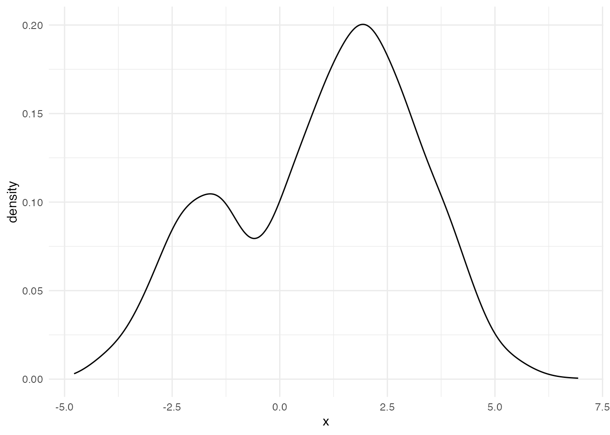
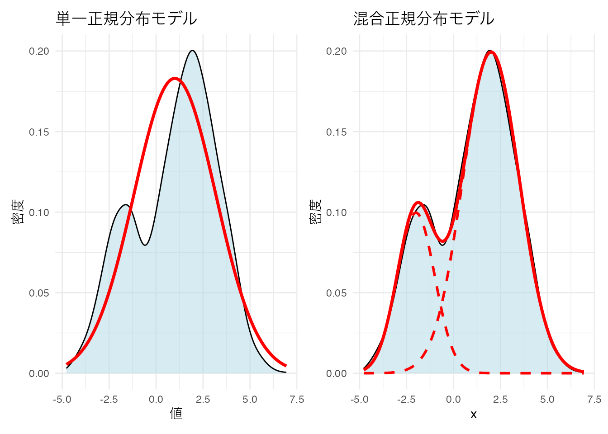
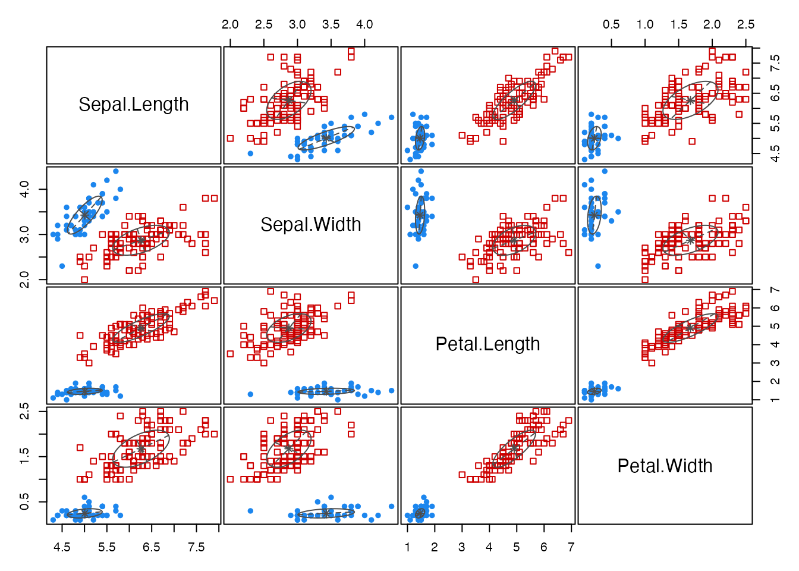
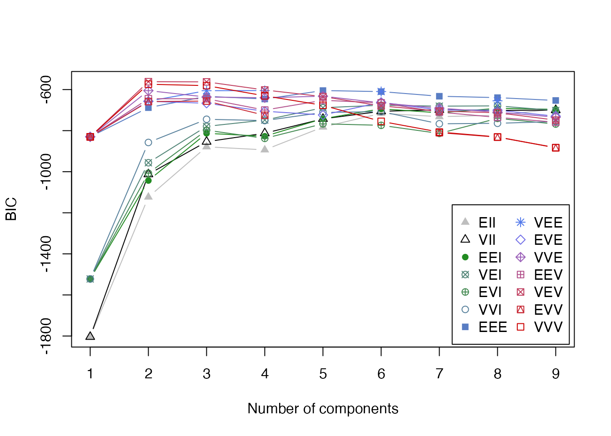
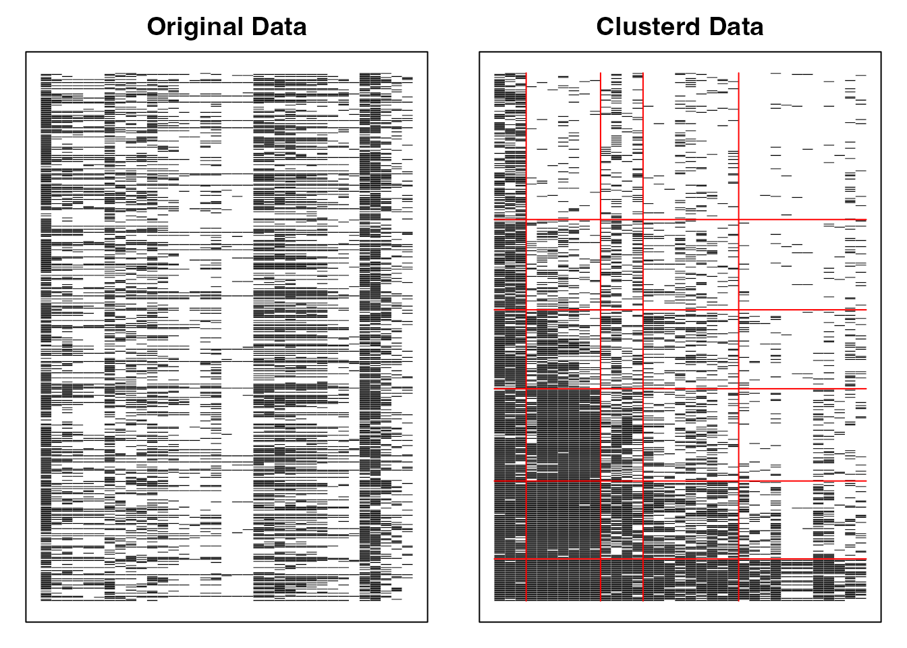
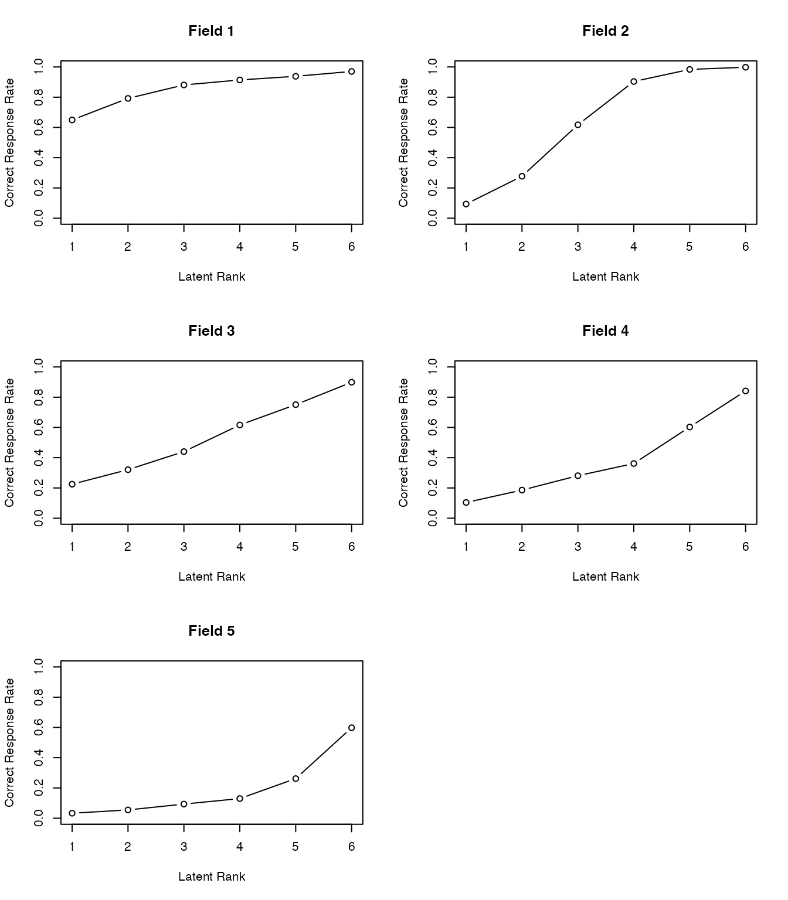
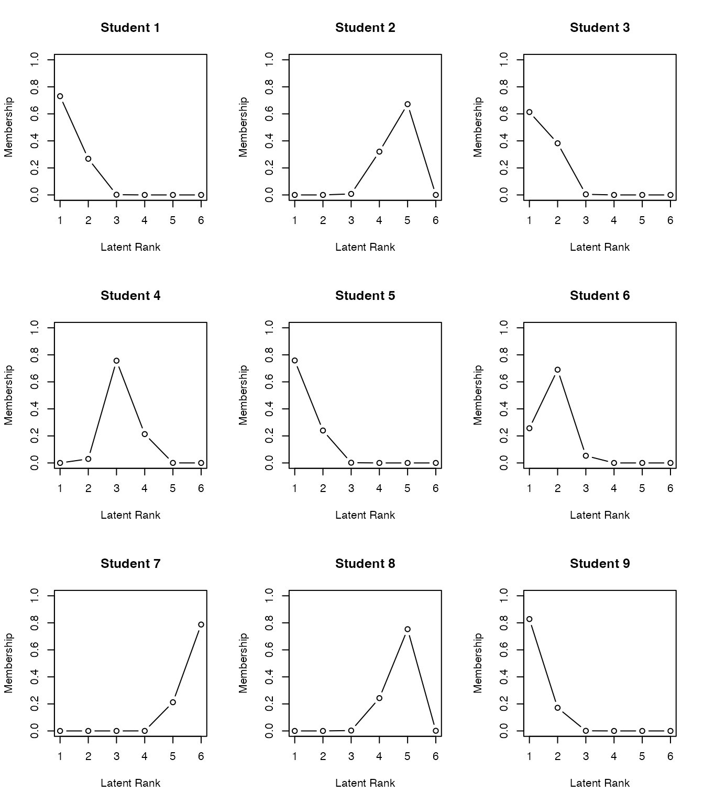

data(iris)
d_matrix <- dist(iris[,-5], method = 'euclidean')
result.h <- hclust(d_matrix, method = 'ward.D2')
plot(result.h, main = "Hierarchical Clustering Dendrogram")
先の章では分散共分散行列(相関行列)に基づいた線形モデルを中心に紹介した。 しかし，多変量解析はそれだけではない。 むしろ測定モデルとして潜在変数を仮定する手法だけに固執するあまり，心理測定の仮定に違反するようなデータであっても因子分析を適用したり，モデルの適合度を優先しすぎて不自然な設定に走ったりするような誤用が多く見られる。
心理学においては因子分析が構成概念を測定していると「純粋に」信じられて多用されてきたが，かつてはさまざまな多変量解析技法が必要に応じて開発，使用されていたのである。 ここでは分析のスタートになる行列の種類で区分し，いくつかの多変量解析モデルを紹介する。
距離とは，次の四つの公理を満たす数字のことをいう。
距離行列とは行列の要素が距離を表しているもので，一般に正方・対称行列になる。この点は分散共分散行列や相関行列と同じで，この行列演算によって分散共分散を用いたモデルとは別の解釈が成立する分析を作ることができる。
ちなみにRでは距離行列を作るのにdist関数を用いる。オプションとして特段の指定がなければユークリッド距離が用いられるが，他にも以下のようなオプションがある。
"euclidean": ユークリッド距離。\(d(x,y) = \sqrt{\sum_{i=1}^N (x_i-y_i)^2}\)で表される。"maximum": チェビシェフ距離。\(d(x,y) = max(|x_i - y_i|)\)で表される。"manhattan": マンハッタン距離。\(d(x,y)=\sum (|x_i - y_i|)\)で表される。"canberra": キャンベラ距離。\(d(x,y) = \sum \frac{|x_i-y_i|}{|x_i+y_i|}\)で表される"binary": バイナリ距離。ジャッカード距離ともいう。0/1のデータに対する距離で，\(d(x,y) = \frac{b+c}{a+b+c+d}\)で表される(aは両方1，bはxが1でyが0，cはxが0でyが1，dは両方0)。両方に共通して1である要素が多いほど距離が小さくなる。"minkowski": ミンコフスキー距離。一般化された距離とも言われ，係数\(p\)でさまざまな距離を表現できる。\(d(x,y)=\left(\sum |x_i-y_i|^p\right)^{\frac{1}{p}}\)で表される。例えば\(p=1\)ならばマンハッタン距離，\(p=2\)ならユークリッド距離である。\(p=\infty\)の時を特にチェビシェフの距離，または優勢次元距離という。数字を何とみなすか，によって心理学でも距離データを扱うことはできる。 尺度評定の差分を(得点間の)距離とみなすこともできるし，相関係数も\(1.0-|r_{jk}|\)のようにすれば距離とみなすことができる。 社会心理学におけるソシオメトリックデータは，対人関係の選好評定だが，これも対人間の距離とみなすことができるだろう。 実験心理学における刺激の混同率や汎化勾配，2つの茂樹が同じか違うかを判断する課題への反応潜時，刺激の代替価・連想価は類似性と考えられるから，これも距離データと言えるだろう(高根 1980)。 距離行列は一個体からの評定や反応からでも生成できるから，小サンプルの実験計画であっても距離行列を得ることができる。
このように，類似性あるいは非類似性を距離と見做して用いることができる。 この利点は，回答者の自然な判断に任せられること，つまり「総合的に判断して，似ているか，似ていないか」といった回答をデータにできることである。研究者はついつい複数の類似した項目で多角的に聞かねばならない，と思いがちだが，下位の評定次元を実験者が準備することは回答者の自由度を束縛している側面もあり，また回答者の負担を考えると必ずしもいいことばかりではない。さらに項目によっては社会的な望ましさバイアスなども含まれるから，「総合的に評価してもらいたい」というのはそういったバイアスから逃れられる側面もある。
距離を対象に考える多変量解析モデルも，そのほかのモデルと同様，要約や分類を目的にしている。また，多次元データを少数の次元に要約するために可視化する手法として用いられることもある。まずは分類を目的としたモデルから見ていこう。
クラスター分析は類似したものをまとめてクラスター(塊)を形成する分析方法である。 クラスター分析の中でも多くの手法・モデルが考えられており，いくつかの側面から分類することができる。
まずはクラスターが階層性を持つかどうか。階層的クラスター分析は距離の短いものから順にまとめていき，クラスターのクラスター，クラスターのクラスターのクラスター，といったように順次大きなグループにまとめ上げていく。
結果はデンドログラムと呼ばれるツリー状のプロットで表されることが一般的で，適当なところで分割して利用する。適切なクラスター数に関する一般的な基準はほとんどなく，実用性に応じてツリーをカットすることが多い。
irisデータによる実行例を示す。
data(iris)
d_matrix <- dist(iris[,-5], method = 'euclidean')
result.h <- hclust(d_matrix, method = 'ward.D2')
plot(result.h, main = "Hierarchical Clustering Dendrogram")
階層的クラスター分析のクラスター同士を上位クラスターにまとめていく方法がいくつか考案されており，Rではhclust関数のmethodオプションで指定することができる。
"ward.D" / "ward.D2": ウォード法。クラスター内の分散を最小化する"single": 最短距離法。クラスター間の最短距離でリンク"complete": 最長距離法。クラスター間の最長距離でリンク"average": 平均法(群平均法)。クラスター間の平均距離でリンク"mcquitty": McQuitty法。重み付き群平均法の一種"median": メディアン法。重み付き群中心法の一種"centroid": 重心法。最もよく使われるのがウォード法で，実践的にもこの手法による分類が最も解釈しやすい。なお，ward.Dオプションはバグがあるので用いないことが望ましく，バグを修正したward.D2を用いること[^15.1]。
1: バグがあるのになぜ修正しないのか，と思われるかもしれない。ward.DはRのバージョン3.0.3以前まで用いられていたが，ユーザからの指摘で正しく分散が計算されていないことが発覚。Rの基本関数に誤りがあったことを認め，戒めとするために元のコードを残している。Rはフリーでオープンなソフトウェアであり，無償ではあるが，フリーだからといっていけないのではなく，こうした自浄作用があることを示すための措置と思われる。ちなみに筆者が以前プロプライエタリな統計ソフトを使っていた時にもおかしな挙動を発見したことがある。メーカに指摘すると「次のバージョンでは修正されているのでそちらを新たに購入しろ」という回答であったため，そのソフトウェアから決別することにした。科学的営みにおいて，有償サポートがあることが真実を担保しない例である。
得られたクラスターの結果はcutree関数で任意のクラスター数に分割できる。今回，irisデータは3種類のirisがあることがわかっているので，クラスター数3にしてその分類精度を確認してみよう。
clusters <- cutree(result.h, k = 3)
table(clusters, iris$Species)
clusters setosa versicolor virginica
1 50 0 0
2 0 49 15
3 0 1 35非階層的クラスター分析として有名なのは，k-means法による分類である。アルゴリズムは次のとおりである。
この方法は任意のクラス数に分類できること，大規模なデータであっても比較的早く収束することが利点である。 Rによるサンプルは以下のとおりである。
result.k <- kmeans(d_matrix, centers = 3)
table(result.k$cluster, iris$Species)
setosa versicolor virginica
1 0 1 37
2 50 0 0
3 0 49 13ここまでのクラスタリングは，各個体がどのクラスターに所属するかが明確に定まっていたが，境界がそこまで明確でない中間的なデータ点もあるかもしれない。各データ点が1つのクラスターにのみ所属するという明確なクラスタリングのことを，ハードクラスタリングとかクリスプクラスタリングという。これに対して，各データ点が複数のクラスターに部分的に所属している，あるいは所属度が例えば0-1などの連続値で表現されるような，緩やかな所属をゆるするクラスタリングもあり，これらを総称してファジィクラスタリングとかソフトクラスタリングと呼ぶ。
ファジィクラスタリングの例として，fuzzy c-means法を挙げる。
pacman::p_load(e1071)
result.c <- cmeans(d_matrix, centers = 3, m = 2)
head(result.c$membership) 1 2 3
1 0.9961597 0.001506520 0.002333829
2 0.9942335 0.002257783 0.003508763
3 0.9893041 0.004265036 0.006430838
4 0.9916595 0.003275385 0.005065129
5 0.9959249 0.001606860 0.002468253
6 0.9753695 0.009344796 0.015285724table(result.c$cluster, iris$Species)
setosa versicolor virginica
1 50 0 0
2 0 2 37
3 0 48 13fuzzy c-meansはe1071パッケージに含まれている。 モデルの指定の時に，ファジィ度パラメータmを指定する。通常1.5から3程度で，大きいほど曖昧さをゆるす。 出力としてmembershipという所属確率が返される。この所属確率が最大のものをハードな分類として使用することができる。
membershipをプロットしてみると，明らかに所属するクラスが明確なものと，曖昧なデータもあることがわかる。 心理学的応用としては，パーソナリティの分類や症状の分類などが考えられるだろう。

階層的クラスタリングや，k-means, fuzzy c-meansの非階層的クラスタリングモデルでは，クラスター数の決定について客観的な指標がなかbunった。そこで，確率モデルとしてクラスター分析を考え，モデル適合度の観点から評価することを考える。
ある変数についてヒストグラムを描き，次のような出力を得たとしよう。

このようなデータに対して，正規分布モデルを当てはめるのは適切だろうか。 正規分布は単峰で左右対称であることが特徴だから，無理やり当てはめるとおかしなことになるだろう。 ここには隠れた二つの正規分布があると考え，それぞれが混ざり合って出てきたものと考えたほうが良い。
Warning: Using `size` aesthetic for lines was deprecated in ggplot2 3.4.0.
ℹ Please use `linewidth` instead.
統計モデルとしては，混合正規分布モデル(Gaussian Mixture Model, GMM)と呼ばれるのだが，これは異なる2つの群を生成モデルとしているクラスター分析であると考えることもできる。GMMでは観測されたデータが複数の正規分布を含んでいると考え，各群に想定される正規分布の平均，分散および群の混合率を推定することでデータの潜在的な特徴を明らかにする。今回は簡便のために1変数でのモデルにしたが，複数の変数がある場合は多変量正規分布で考えることになる。
確率モデルになっているので，尤度を用いてデータとの適合度を計算することができる。潜在的な分布がいくつあるのかをBICなどを基準に選定することで，客観的にクラス数を決定することができるのが利点である。
パッケージを使って具体的なデータを分類してみよう。
pacman::p_load(mclust)
# irisデータから数値変数のみを取得
iris_data <- iris[, 1:4]
# mclustによるクラスタリング
gmm_result <- Mclust(iris_data)
# 結果の表示
summary(gmm_result, parameters = TRUE)----------------------------------------------------
Gaussian finite mixture model fitted by EM algorithm
----------------------------------------------------
Mclust VEV (ellipsoidal, equal shape) model with 2 components:
log-likelihood n df BIC ICL
-215.726 150 26 -561.7285 -561.7289
Clustering table:
1 2
50 100
Mixing probabilities:
1 2
0.3333319 0.6666681
Means:
[,1] [,2]
Sepal.Length 5.0060022 6.261996
Sepal.Width 3.4280049 2.871999
Petal.Length 1.4620007 4.905992
Petal.Width 0.2459998 1.675997
Variances:
[,,1]
Sepal.Length Sepal.Width Petal.Length Petal.Width
Sepal.Length 0.15065114 0.13080115 0.02084463 0.01309107
Sepal.Width 0.13080115 0.17604529 0.01603245 0.01221458
Petal.Length 0.02084463 0.01603245 0.02808260 0.00601568
Petal.Width 0.01309107 0.01221458 0.00601568 0.01042365
[,,2]
Sepal.Length Sepal.Width Petal.Length Petal.Width
Sepal.Length 0.4000438 0.10865444 0.3994018 0.14368256
Sepal.Width 0.1086544 0.10928077 0.1238904 0.07284384
Petal.Length 0.3994018 0.12389040 0.6109024 0.25738990
Petal.Width 0.1436826 0.07284384 0.2573899 0.16808182# 分類結果の可視化
plot(gmm_result, what = "classification")
# 真の種と比較
table(iris$Species, gmm_result$classification)
1 2
setosa 50 0
versicolor 0 50
virginica 0 50# BICによるモデル選択結果
plot(gmm_result, what = "BIC")
mclustでは，各クラスターの共分散行列の構造によって異なるモデルが考慮される。モデル名は3文字のコードで表現され，それぞれの文字が以下の意味を持つ：
E = Equal(等しい)V = Variable(異なる)E = Equal(等しい)V = Variable(異なる)E = Equal(等しい)V = Variable(異なる)I = Identity(単位行列，球形)例えば： - EII: 全クラスターが同じ大きさの球形(等分散球形) - VII: 各クラスターが異なる大きさの球形(異分散球形) - EEE: 全クラスターが同じ大きさ・形状・向きの楕円 - VVV: 各クラスターが異なる大きさ・形状・向きの楕円(最も一般的)
これらの組み合わせにより，14種類の共分散構造から最適モデルをBICを参考に自動的に選定される。今回はVEV (ellipsoidal, equal shape)の2クラスターモデルが最適として判断された(実際は3種あるが，データからは2種類が最適と判断されている)。
潜在的に分類する手法は，例えばマーケティング業界では購買層を探索的に見出す手法として使われる。潜在的なクラスが順序尺度水準であることを想定すれば，潜在ランクモデルと呼ばれ，テスト理論の応用モデルとして提案されている。Shojima (2022) ではIRTのような精緻な\(\theta_i\)の推定よりも段階的な推定の方が実践的意義が高いことから，潜在ランクモデルを活用する利点が論じられている。
Cattelのデータキューブのところで触れたように，Observation \(\times\) Variablesのデータセットがあったとき，変数の共変動から個人を分類することも，個人の共変動から変数を分類することもできる。そしてまた，両者を同時に分類するバイクラスタリング(Biclustering)という手法も提案されている。
BiclusteringはTwo-Mode Clusteringとも呼ばれ，様々なモデルが提案されているが，ここでは Shojima (2022) のテスト理論の観点から見てみよう。
テスト理論はデータがバイナリであり，この分析の確率モデルとしてはベルヌーイ分布を置いたIRTが一般的である。しかし上で述べたように，IRTで推定されるような潜在得点\(\theta\)の精度は実質的な意味が見えにくいことがある。すなわち，\(\theta\)が\(0.01\)ポイント違うことが，どのような違いに相当するのか。\(\theta\)を\(0.5\)ポイント上昇させるために受検者はどのような努力をすれば良いのか。また実用上も，数段階の診断結果や，単純な合否の2段階に分割してのフィードバックをするのであれば，そこまで細かい分類は必要ないかもしれない。
Shojima (2022) のバイクラスタリングでは，テストデータにおける項目を複数のフィールドに，受検者を複数のクラスに分類する。受験者の分類は正答率に応じて順序づけることができ，ランクとして表現することができる(ランクで表現されるモデルは特にランクラスタリングとよばれる)。
荘島のバイクラスタリングモデルを形式化するために，主要な行列を定義しよう。\(J\)を項目数，\(S\)を受検者数，\(C\)を潜在クラス/ランク数，\(F\)を潜在フィールド数とする。
バイクラスター参照行列\(\boldsymbol{\Pi}_B\)は次のように定義される：
\[ \boldsymbol{\Pi}_B=\left[\begin{array}{ccc} \pi_{11} & \cdots & \pi_{1F} \\ \vdots & \ddots & \vdots \\ \pi_{C1} & \cdots & \pi_{CF} \end{array}\right]=\left\{\pi_{fc}\right\} \]
ここで各要素\(\pi_{fc}\)は，クラス/ランク\(c\)の受検者がフィールド\(f\)の項目に正答する確率を表す。
クラス所属行列\(\mathbf{M}_C\)とフィールド所属行列\(\mathbf{M}_F\)は次のように定義される：
\[ \mathbf{M}_C=\left[\begin{array}{ccc} m_{11} & \cdots & m_{1C} \\ \vdots & \ddots & \vdots \\ m_{S1} & \cdots & m_{SC} \end{array}\right], \quad \mathbf{M}_F=\left[\begin{array}{ccc} m_{11} & \cdots & m_{1F} \\ \vdots & \ddots & \vdots \\ m_{J1} & \cdots & m_{JF} \end{array}\right] \]
ランククラスタリングにおけるランク所属行列\(\mathbf{M}_R\)は，クラス所属行列\(\mathbf{M}_C\)に，前後のクラスのつながりを緩やかに繋げるフィルター行列\(\mathbf{F}\)をかけることで得られる。
\[ \mathbf{M}_R = \mathbf{M}_C \mathbf{F} \]
フィルタ行列は，例えばランク数が6の場合，次のような行列になる。 \[ \mathbf{F}=\left[\begin{array}{rrrrrrr} 0.864 & 0.120 & & & & & \\ 0.136 & 0.760 & 0.120 & & & & \\ & 0.120 & 0.760 & 0.120 & & & \\ & & 0.120 & 0.760 & 0.120 & & \\ & & & 0.120 & 0.760 & 0.120 & \\ & & & & 0.120 & 0.760 & 0.136 \\ & & & & & 0.120 & 0.864 \\ \end{array}\right] \]
これらを踏まえて，尤度関数は次のように定義され，EMアルゴリズムによって推定される。
\[ l(\mathbf{U}\mid \boldsymbol{\Pi}_B) = \prod_{s=1}^S\prod_{j=1}^J\prod_{f=1}^F\prod_{c=1}^C \left(\pi_{fc}^{u_{sj}} (1-\pi_{fc})^{1-u_{sj}}\right)^{z_{sj} m_{sc} m_{jf}} \]
これを実装したパッケージexametrikaとそのサンプルコードをみて，実践例を見てみよう。
pacman::p_load(exametrika)
result.Ranklustering <- Biclustering(J35S515,
nfld = 5, ncls = 6,
method = "R",verbose = F)
plot(result.Ranklustering, type = "Array")
exametrikaパッケージのバイクラスタリングは，引数にデータ，フィールド数nfld，クラス(ランク)数ncls，および手法(Bならバイクラスタリング，Rならランクラスタリング)をとる。 ここではパッケージに含まれているサンプルデータJ35S515を使っているが，これは35項目からなるテストで515人の受検者からの回答を得たものである。
分析結果としてアレイプロットがしめされている。この図の左は，行ごとに受検者，列ごとに項目からなり，正答を黒い四角(■)，誤答を白い四角(□)で表現したローデータである。右に示されているのは分析結果による同様の表示で，ランクごと，フィールドごとに類似したパターンがまとめられていることがわかる。
フィールドの分類とランクをみることで，受検者には次のランクに進むにはどの領域の項目に正答すれば良いか，といった情報を提供することができる。また，フィールドやランクへの所属は確率で表現され(ファジィクラスタリング)，受検者にはランクアップOdds, ランクダウンOddsを提供することができる。
フィールド所属行列，ランク所属行列を可視化したプロファイルの出力を以下に示す。
plot(result.Ranklustering, type = "FRP", nc = 2, nr = 3)
plot(result.Ranklustering, type = "RMP", students = 1:9, nc = 3, nr = 3)
バイクラスタリングは多値モデルも開発されており，心理尺度の新しい分析手法として期待されている。というのも，クラスタリングは表層的な反応パターンによる分類で，因子分析法やIRT(GRM)のようなデータ生成メカニズムを仮定しないことから，潜在変数の意味解釈といった理論的問題を避けることができるからである。また，項目についてのクラスタリングは得点もしくは変化得点を質的な意味に割り当てることが容易であることもその理由として挙げられる。
なお，パッケージexametrikaには Shojima (2022) に含まれる12のモデル全てを実装している。詳しくはサイトを参照のこと。
15.1↩︎